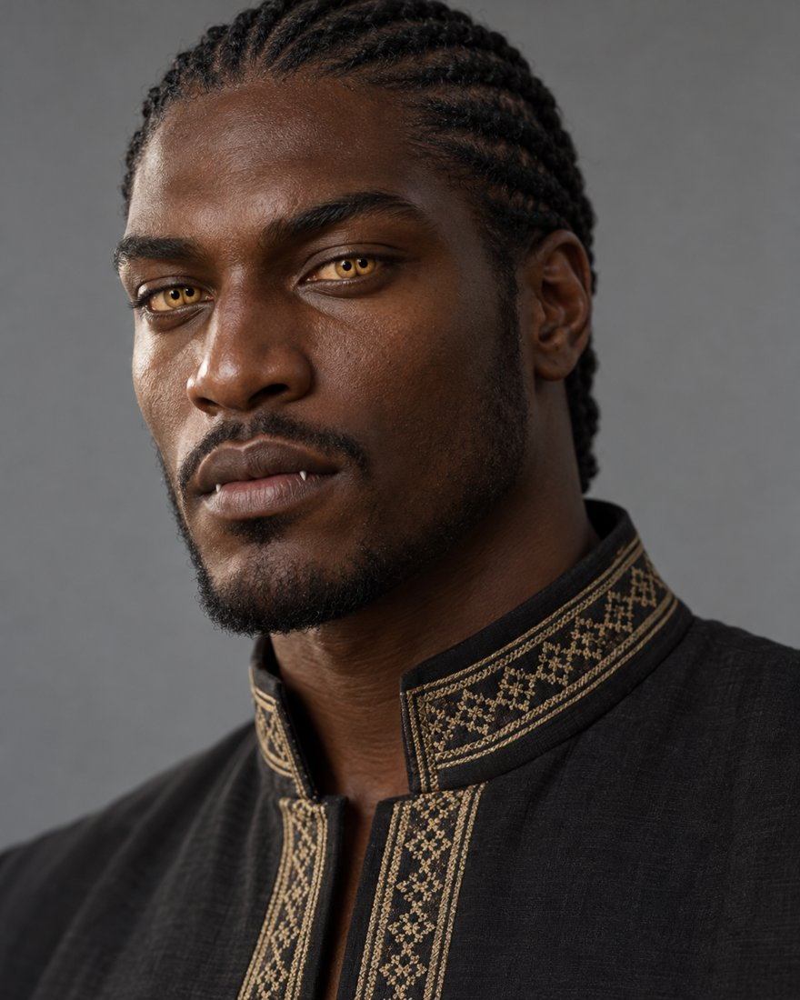
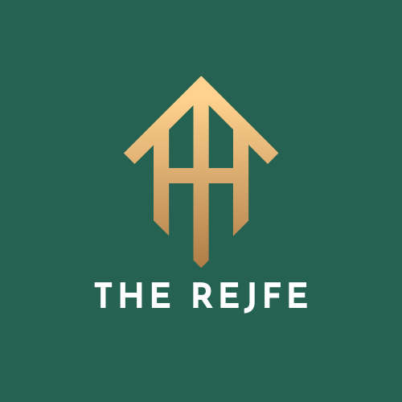

Rejfê

Four allied tribes on the northern supercontinent. They arose on Earth, returned to Kanna, and carved out their land side by side as allies.
Lines without a tag are settled canon from the Kanna reference documents. Tags mark anything less settled.
- Land
- The northern supercontinent, 18 to 72°N
- Government
- Four allied tribes. The High King (Ran) seat rotates among them.
- Language
- Rejfên (called Grejns in Stamfaen), written in the Skoentega gate-hand script
- Skin
- #3d251e to #6a4a3a
- Age-bands
- None
- Magic
- Tied with the Dorrwfø for the weakest ley sense of any people
Origin
The proto-Rejfê arose on Earth during the Exodus, children of the three Hvaena and of Haelael, the Aempaera general who later fell as Lioshe. See Lioshe. After the Return, the four tribes carved out Kanna land together as allies who had fled and fought side by side, not as one ruling the others. Canon
The four tribes
| Tribe | Element and place | Land | Clothing inspiration |
|---|---|---|---|
| Tavgrirejfê | Earth. Centre, 38 to 55°N | Warm temperate highland valleys, forested, with a major river system. The prime habitable band and the ruling seat. | Ethiopian |
| Havdèlrejfê | Water. West coast, 30 to 50°N | Coastal margins, tidal zones, deltas, reedlands and rich fisheries. | Fulani, Ivorian, Beninese, Guinean |
| Dhavgrirejfê | Fire. South, 18 to 28°N | Volcanic subtropics, ash-fertile. Borders the Burnt Belt with no buffer, so they face the worst fire season of the four. | Chadian, Malian |
| Savkalrejfê | Air. North, 58 to 72°N | Subpolar highlands, mountainous, with a long winter dark. | Basotho blanket tradition, with Mongolian and Sámi influence |
- Savkalrejfê have a growing season of only 60 to 70 local days. That is the physical reason for their blood-accelerated grove practice: they cannot wait for slow natural fruiting, and the fruit's ley boost gives surplus warmth, a real survival edge at that latitude.
- Tavgrirejfê feel Kanna's baseline seasonal swing with no extra regional extreme, which is why their footwear is a single versatile design. Terrain there is forested ridges, lower mountains and river-cut valleys, clearly mountainous but nowhere near Savkalrejfê scale.
- Havdèlrejfê economy sits on exactly the biome that the post-Calamity tidal regularization left poorer but predictable.
- Footwear and clothing vary by tribe and climate, not uniformly across the people.
Governance
The High King (Ran) seat rotates among the four allied tribes instead of passing down one house, so no tribe rules the others. Local nobility follows a jarl-type structure that feeds up into the rotating seat. Legitimacy comes from being able to claim the clearest line to the Hvaena ancestors. Canon
The partner structure
Wealthy Rejfê may hold up to three legally recognized partners. Any combination of one to three is respectable. Metamours are usually only amicable, not close. Among commoners, the political and emotional slots are usually the same person. Canon
| Partner | Role | Meaning |
|---|---|---|
| Sejralkona | Political, arranged | sejral (rightful) + kona (person) |
| Mèlakona | Emotional bond | mèla (soul) + kona |
| Gadekona | Battle and journey | gade (guard, watchman) + kona |
Marrying outside the tribe
Traditionally this is a survival measure for a family line that could not find a Rejfê partner, a last resort and not casual practice. A marriage made for love rather than necessity draws real disgruntlement, precisely because it was not required. Canon
Faith and body
- The Rejfê ancestor rite is a symbolic movement version of veneration, with no actual fruit. They are the most ritually diluted of the descendant peoples.
- About 97% of Rejfê are dimorphic, about 3% intersex, and about 0.5% dual-set, the lowest rate of any people and plausibly a real outlier from their origin.
Body
- Gestation
- 12 to 14 months
- Pupil
- Polycoria: two round pupils per eye
- Iris
- Gold or amber, little silver shift
- Ears
- Longer, tight to the skull; wiggle as a pair if at all
- Tongue
- Dark pink, smooth
- Blood
- Red-violet
- Nose
- Broad, sculpted
- Teeth
- Four sharp canines
- Arms
- 2
- Spine
- Human-like, at the upper end of flexibility
- Joints
- Human typical
- Strongest sense
- Taste (best in the family)
- Body hair
- East Asian-like
- Build (masc)
- Swimmer or soccer
- Build (femme)
- Shorter and heavier
- Height
- 5'0" to 7'0"
- Height by sex
- Masc taller than femme
- Skin tone
- #3d251e to #6a4a3a
- Markings
- None
- Lifespan
- 200 to 400
- Active period
- Cathemeral tendency kept
Still to decide
- The cause of the historical Rejfê and Kannafê conflict. A resource dispute, possibly over control of the gates, is floated but not locked. Open
- What a Tavgrirejfê elder council session, or an inter-tribal session to choose a new Ran, looks like in practice. Open
Emblem
